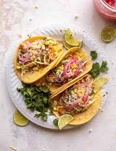

Fish Tacos

Description
These crispy fish tacos with shredded cabbage and a spicy homemade white sauce are just delicious! Serve with homemade pico de gallo and lime wedges to squeeze on top.
Ingredients
- Homemade white sauce
- Fresh cabbage
- Avocados
- Onions
- Cotija cheese
- Diced tomatoes
- Cod filets
Steps
- Make the beer batter.
- Make the white sauce.
- Dust the fish in four, then dip in the batter.
- Fry the fish until golden brown.
- Serve on tortillas with the sauce cabbage.